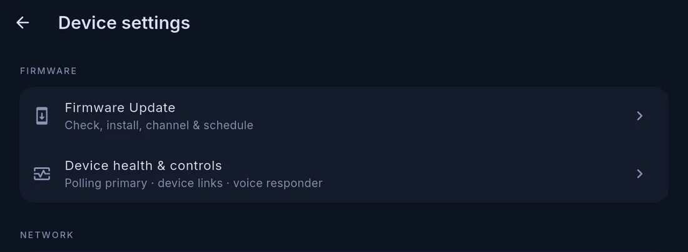

Updates and recovery
Automatic updates
Cora Max keeps itself current. New versions download in the background and install themselves; you are told what changed.
Nothing is required from you to stay up to date.
Checking the version

Settings → Cora Max → Firmware Update covers checking, installing, the update channel and its schedule. Device health & controls sits directly beside it in the same Firmware group, and is where the unit's own diagnostics live — polling primary, device links and voice responder included.
When an update is available
A prompt appears describing what is new, with two choices:
- Update now — installs immediately and restarts
- Snooze 3 hours — asks again later
Left alone, an update installs itself overnight, between roughly 3 and 5 in the morning, so the screen is not restarting while you are looking at it.
Recovery
Recovery is a maintenance mode for when a unit will not start normally, or when you need to repair its setup without a laptop.
To enter it: hold five fingers on the top-right of the screen for about ten seconds, then enter the unit's Recovery PIN.
That six-digit PIN was shown when the unit was paired, and it is also in that device's settings in Cora Mobile. It is not shown on the Cora Max itself — which is the point: recovery cannot be reached by a guest, or by a child leaning on the screen.
From recovery you can:
- Repair the Wi-Fi connection
- Re-pair the unit to your account
- Force a firmware update
- Factory reset the unit
A unit that fails to start several times in a row can also roll itself back to the previous version.
If a unit does not restart
Email cora@coraiq.tech with the version shown on screen and what it says. Do not re-pair the unit first — pairing state is often useful in working out what happened.
Written for Cora Max 0.28.37 and Cora Mobile 0.5.55.
Still stuck? Email cora@coraiq.tech and we'll help.